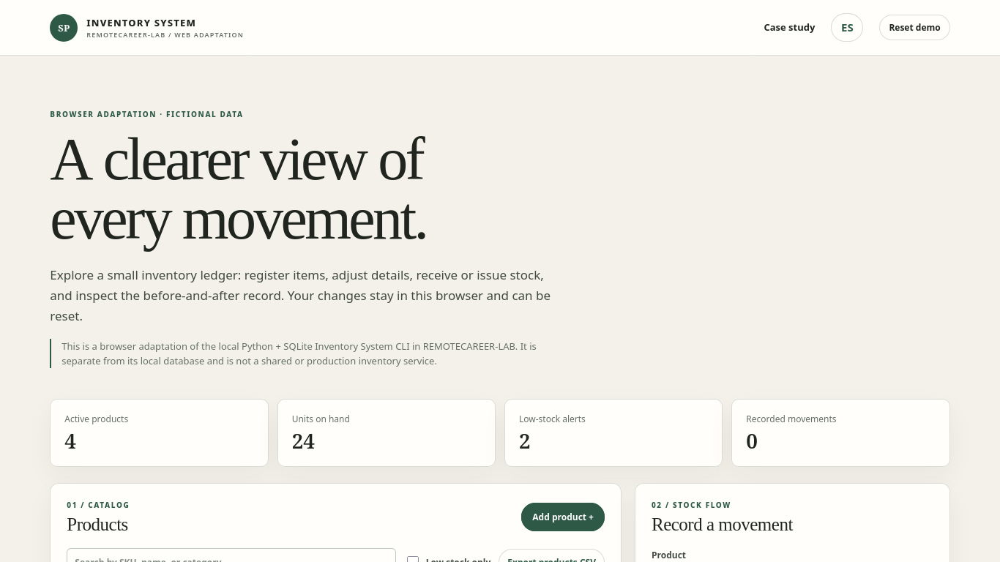

PROJECT CASE STUDY
Inventory System
Trace stock changes in a browser ledger
Use fictional warehouse items, record a receipt or issue, and review the transaction history. Reset the sample at any time.

Open live demo ↗01 / PROBLEM
Problem: keep product quantities consistent while retaining a change trail.
02 / OBJECTIVE
Objective: demonstrate transactional stock updates.
03 / SOLUTION
Solution: safe browser adaptation based on the verified Python/SQLite module.
04 / ARCHITECTURE
Architecture: static client-side state and synthetic seed rows.
05 / IMPLEMENTATION
Implementation: add/edit products, receive/issue quantities, reject negative stock, low-stock filter and CSV export.
06 / TESTING
Testing: quantity guard and ledger balances.
07 / LIMITATIONS & ROADMAP
Limitations & roadmap: no multi-warehouse, valuation, roles or server persistence; the source CLI remains local.
08 / ACCESS
Access: demo, repository and implementation notes.